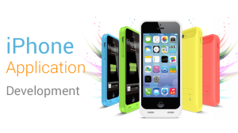

<?xml version="1.0" encoding="UTF-8"?><rss version="2.0"
	xmlns:content="http://purl.org/rss/1.0/modules/content/"
	xmlns:wfw="http://wellformedweb.org/CommentAPI/"
	xmlns:dc="http://purl.org/dc/elements/1.1/"
	xmlns:atom="http://www.w3.org/2005/Atom"
	xmlns:sy="http://purl.org/rss/1.0/modules/syndication/"
	xmlns:slash="http://purl.org/rss/1.0/modules/slash/"
	>

<channel>
	<title>iPhone Application Development &#8211; Blog</title>
	<atom:link href="https://www.ehorizon.ae/blog/tag/iphone-application-development/feed/" rel="self" type="application/rss+xml" />
	<link>https://www.ehorizon.ae/blog</link>
	<description></description>
	<lastBuildDate>Thu, 01 Mar 2018 05:29:32 +0000</lastBuildDate>
	<language>en-US</language>
	<sy:updatePeriod>hourly</sy:updatePeriod>
	<sy:updateFrequency>1</sy:updateFrequency>
	<generator>https://wordpress.org/?v=4.4.15</generator>
	<item>
		<title>Make Your Brand Superior with iPhone Application Development in Dubai</title>
		<link>https://www.ehorizon.ae/blog/2016/07/08/make-your-brand-superior-with-iphone-application-development-in-dubai/</link>
		<comments>https://www.ehorizon.ae/blog/2016/07/08/make-your-brand-superior-with-iphone-application-development-in-dubai/#comments</comments>
		<pubDate>Fri, 08 Jul 2016 09:49:00 +0000</pubDate>
		<dc:creator><![CDATA[eHorizon]]></dc:creator>
				<category><![CDATA[iPhone Application Development]]></category>

		<guid isPermaLink="false">https://www.ehorizon.ae/blog/?p=95</guid>
		<description><![CDATA[<p>The success of iPhone application development in Dubai and around the world is definitely in direct correlation with the success of iPhones and iOS devices. Designed and developed by Apple Inc., iPhone has witnessed an increasingly growing market and has become a huge success amongst millions across the globe. This explains the need for compelling [&#8230;]</p>
<p>The post <a rel="nofollow" href="../../../2016/07/08/make-your-brand-superior-with-iphone-application-development-in-dubai/index.html">Make Your Brand Superior with iPhone Application Development in Dubai</a> appeared first on <a rel="nofollow" href="../../../index.html">Blog</a>.</p>
]]></description>
				<content:encoded><![CDATA[<p style="text-align: justify;">The success of iPhone application development in Dubai and around the world is definitely in direct correlation with the success of iPhones and iOS devices. Designed and developed by Apple Inc., iPhone has witnessed an increasingly growing market and has become a huge success amongst millions across the globe. This explains the need for compelling iPhone application development services that can stabilize and improve business prospects and ensure long-term success.</p>
<p style="text-align: justify;"></p>
<p style="text-align: justify;">The increased demand for iPhone devices directly attributes to the increasing need of mobile app development services. Businesses wish to create a mark on the iOS platform as it is a better way of making products and services more reachable to a large number of consumers. Creating an iPhone app helps target millions of users that use iPhones, and helps companies stay ahead in the competition. However, just creating an iPhone application is not enough. What’s more important is to ensure that your iPhone app has the necessary qualities and features that can attract mass attention and maximize your profits and ROI’s in the long run.</p>
<p style="text-align: justify;"><strong>Why should you go with iPhone application development for your business?</strong></p>
<ul style="text-align: justify;">
<li>The iOS software is as smooth and user-friendly as anything could get. This greatly helps developers build unique and innovative mobile apps that are robust yet simple at the same time. Having a great user base, developing user-friendly, clean and clear applications helps with better audience targeting and helps users find your products and services easily and rapidly.</li>
<li>You can enormously expand the outreach of your market. By developing a mobile application for iPhone devices, you expand your business’ reach and make your products and services accessible to a large number of users. The chances of converting users into potential customers become much higher and simpler by developing an attractive iPhone app.</li>
<li>Thanks to the SDK (Software Development Kit) of iPhone, it gives developers greater ease and convenience to build impressive and result-driven iPhone apps quickly. The SDK has all the necessary requisites that provide developers with an effective, simpler and a faster way of creating top-notch iPhone applications.</li>
<li>The popularity of iPhone apps is growing exponentially. When you develop an iPhone application, you are guaranteed to get immense recognition and you can improve your brand reputation to a great extent. The exceptional features of iPhone apps do not just make the iPhones so popular but also makes them an important part of people’s lives.</li>
<li>Paving the way to the Apple App Store actually opens up a range of opportunities for branding, sales or marketing. Through a cohesive application development strategy, you can implement fruitful marketing and promotional strategies for your businesses, which are not only going to reach a larger audience but will have a greater impact on them.</li>
<li>The platform also allows for better and customized communication with users. iPhone apps are interactive in nature if they are developed in the right manner. Thus such mobile applications help with faster networking, interaction and communication gateways with a better room for sharing information on social media platforms conveniently.</li>
<li>iPhone apps are not only performance-oriented with greater speed and usability but are also a delight to look at. With impressive styles and design templates, you can actually develop a very creative and appealing application that can attract more and more visitors to download and use your app. In addition, iPhone apps are widely known for their performance and speed, and thus, are extremely easy and smooth to use and operate.</li>
<li>Targeting the iPhone market actually means taking your business at a global level. Users are being targeted all around the globe and your market is not restricted to a specific boundary or region. This way, you can promote your products and services at an international level and achieve global acclaim.</li>
</ul>
<p style="text-align: justify;">To help your company make the most out of such benefits, it is imperative that you hire professional <strong><a href="../../../../iphone-application-development-services.html">iPhone application development services in Dubai</a></strong> and elsewhere. You can only reap profitable returns when the outsourced experts can implement rapid, thorough and profound mobile app development plans to give your business the edge that it requires for standing out in the market. An innovative, user-oriented and integrated iPhone app can surely direct your business towards success in a much effective manner and within a short time frame.</p>
<p>The post <a rel="nofollow" href="../../../2016/07/08/make-your-brand-superior-with-iphone-application-development-in-dubai/index.html">Make Your Brand Superior with iPhone Application Development in Dubai</a> appeared first on <a rel="nofollow" href="../../../index.html">Blog</a>.</p>
]]></content:encoded>
			<wfw:commentRss>https://www.ehorizon.ae/blog/2016/07/08/make-your-brand-superior-with-iphone-application-development-in-dubai/feed/</wfw:commentRss>
		<slash:comments>1</slash:comments>
		</item>
	</channel>
</rss>

<!-- Localized -->